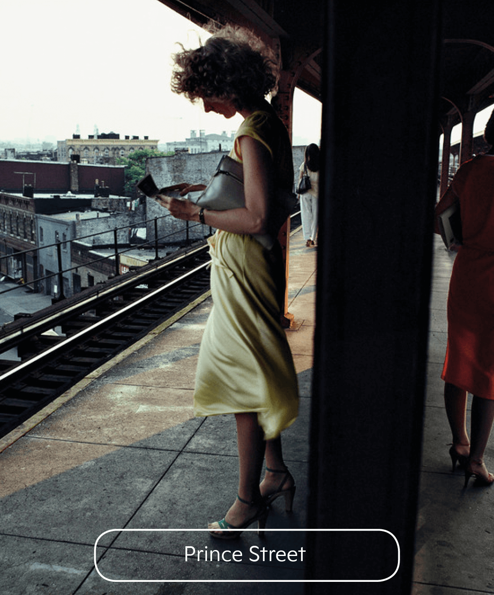
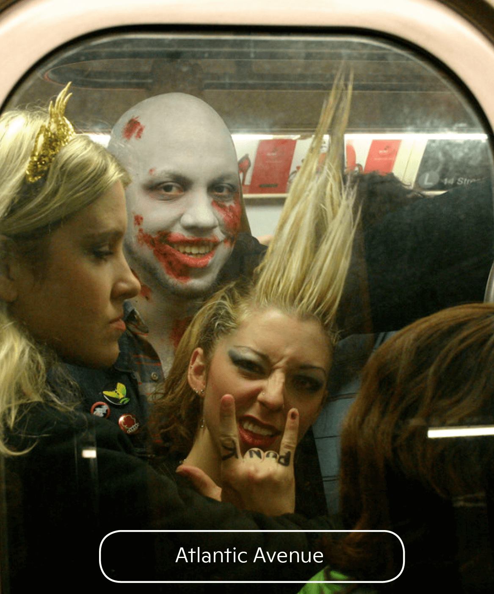
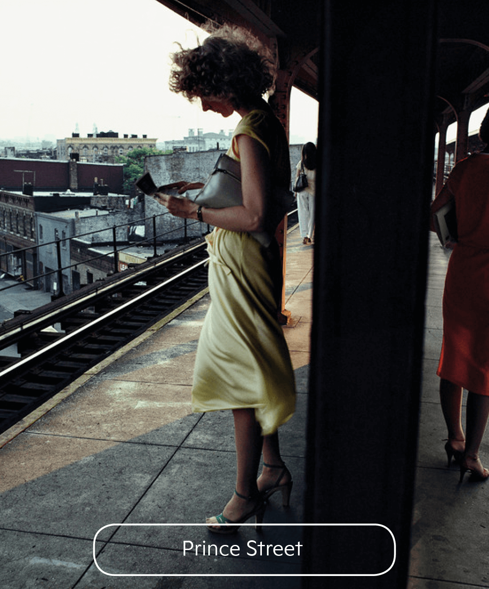
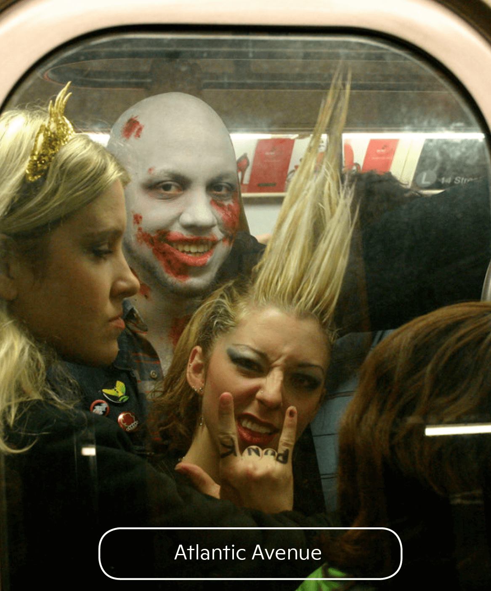
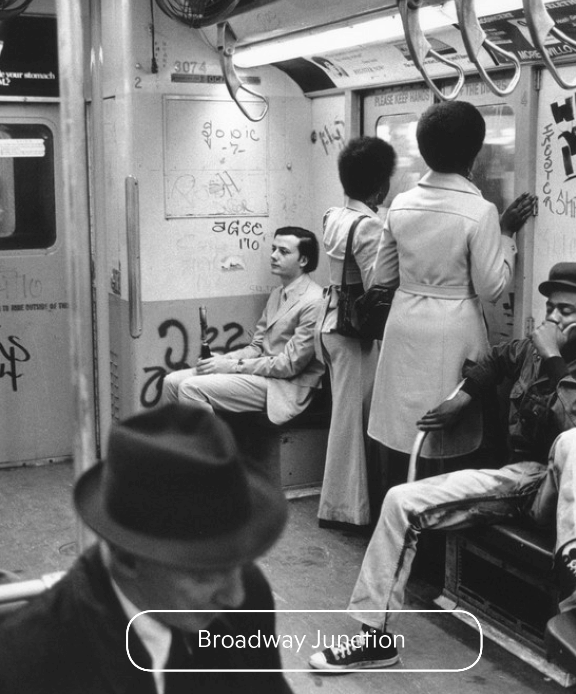
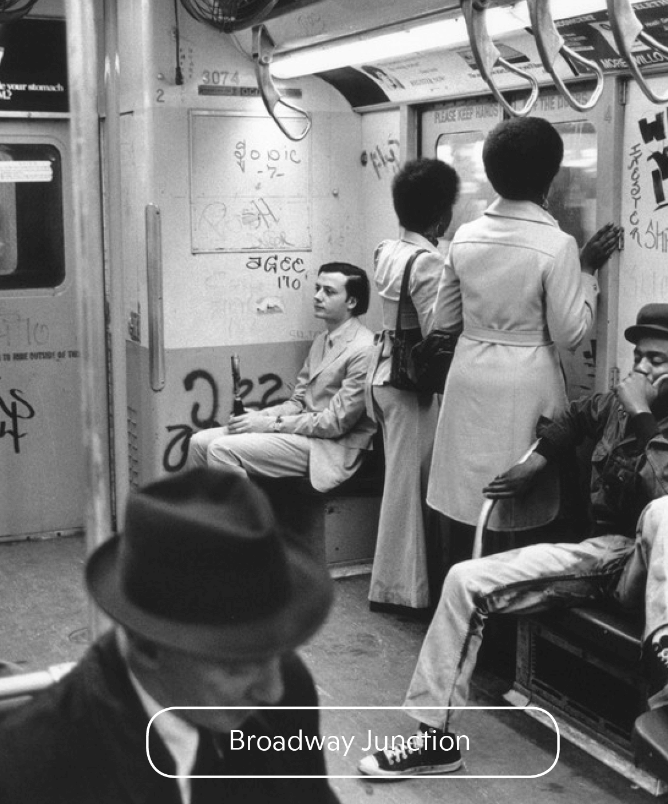
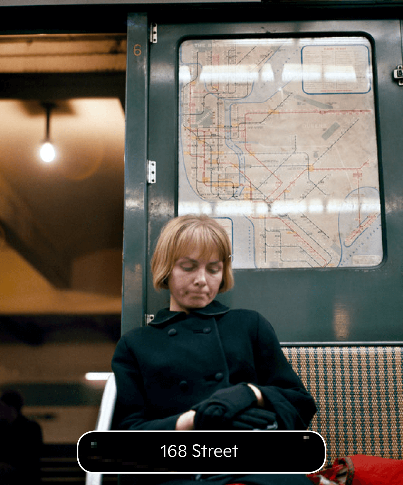
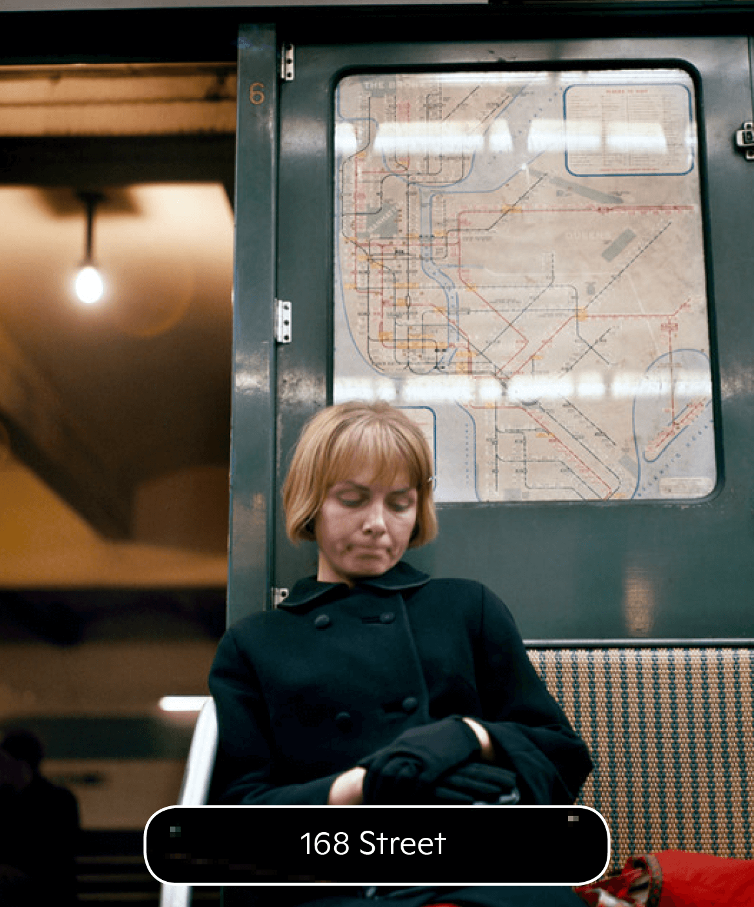
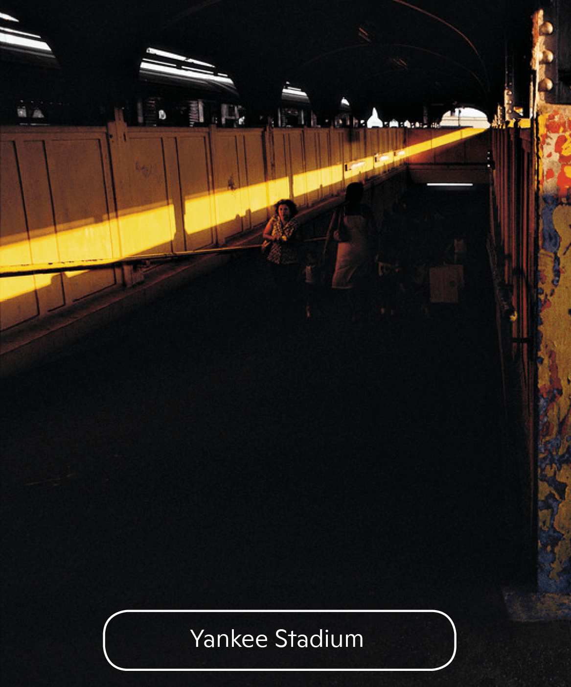
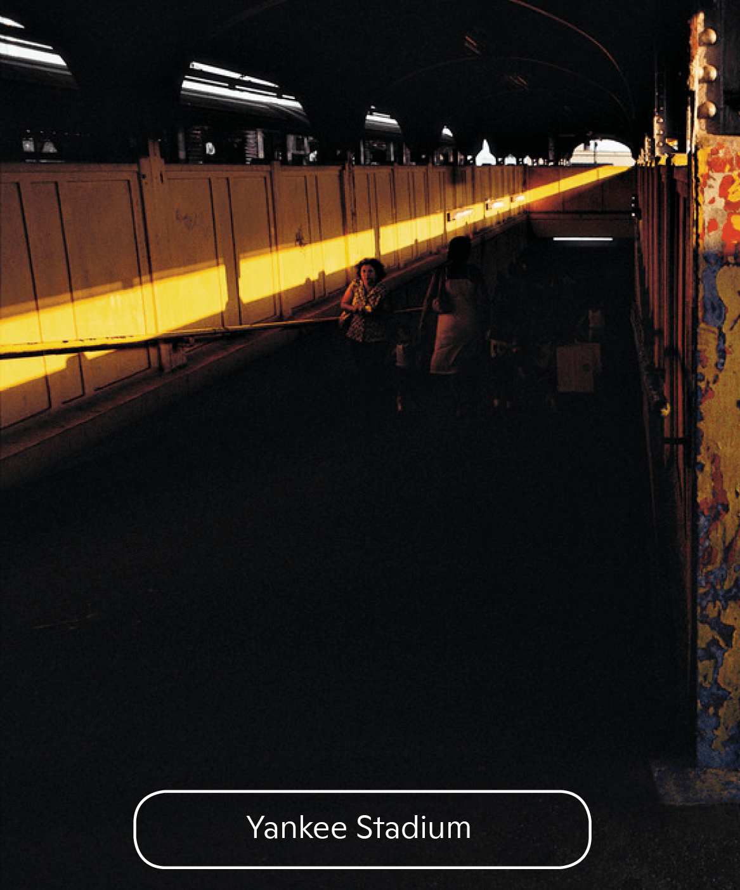

genèse
+
Le métro de New York est tout simplement le plus grand du monde : 422 stations, 368 kilomètres de voies, 5 millions de passagers par jour (oui, par jour… ce qui fait 1,5 milliard par an !), la consommation électrique d'une ville américaine de 300 000 habitants, 50 000 employés dédiés à son exploitation, des rames qui peuvent aller jusqu'à 180 mètres de long, et plus de 6000 rames en fonction, composées de 8 à 12 voitures chacune. Autre record moins connu : c'est, de loin, le principal réseau de métro des USA, représentant à lui seul près de 80% des ressources "subway" du pays. D'autres grandes villes comme Chicago, Boston, Los Angeles et San Francisco sont équipées d'un réseau de métro, mais le plus souvent aérien, plus assimilable à des trains de banlieue qu'un véritable métro, et constitué souvent uniquement de quelques lignes.
La création du métro de New York remonte officiellement à 1868 pour la première ligne aérienne ("elevated"). Mais celle-ci ressemblait plus à un train circulant en ville qu'à un véritable métro (les rames étaient tirées par une locomotive à vapeur). Une première ligne expérimentale souterraine dans Manhattan avait été testée en1870 sur une ligne reliant deux stations, maisc'est seulement à la création de la "City of Greater New York" (Communauté Urbaine de New York, entité publique réunissant les 5 boroughs) que le projet de création du métro prend vraiment forme.
MTA
+
Le transport métropolitain existait déjà à Londres, à Paris, à Budapest ou encore à Athènes, mais aucune ligne n’avait encore été ouverte sur le continent américain. « La ville de New York ne voulait pas s’engager seule dans ce projet. Elle avait peur d’être accusée de mener une politique trop socialiste si elle se lançait dans ce programme de construction d’un nouveau réseau de transports en commun. L’administration a donc préféré opter pour un partenariat public/privé » explique l’historien.
Le projet a cependant eu du mal à attirer les investisseurs. Les compagnies privées ne voulaient pas s’engager dans un chantier aussi onéreux sans garantie de rentabilité. La ville de New York doit alors faire des concessions, elle finança elle même la construction des lignes, mais confia à l’Interborough Rapid Transit Company (IRTC) la gestion du réseau. La première ligne vit le jour en 1904. En parallèle, la Brooklyn Rapid Transit Company (elle sera ensuite rebaptisée Brooklyn-Manhattan Transit Corporation) qui avait déjà un réseau de train aérien à Brooklyn décida d’enterrer une partie de ses lignes dès 1908.
En 1940 les deux réseaux sont rachetés par le City of Greater New York, et la construction de lignes souterraines privilégiée.Les lignes aériennes redondantes sont supprimées et le réseau progressivement étendu sous l'égide d'une nouvelle structure publique : la New York Transit Authority, créée en 1953.
En 1968, celle-ci est mise sous tutelle de la Metropolitan Transportation Authority : MTA. C'est toujours le MTA qui gère le métro à New York en 2010 et cet acronyme se trouve inscrit sur les tous les tickets de transport. De l'origine IRT et BMT subsiste une particularité : certaines sections du réseau utilisent des rames différentes en longueur et largeur, incompatibles entre elles, qui nécessitent donc de changer de rame à certaines stations pour continuer le trajet. Les rames d'origine IRT circulent aujourd'hui sur le réseau dénommé Division A, et les rames d'origine BMT sur la Division B. Le métro couvre maintenant l'ensemble des 5 boroughs de New York (Manhattan, Queens, Bronx, Brooklyn, Harlem) avec de nombreuses ramifications et une forte densité de stations dans Manhattan. Il est connecté à l'aéroport JFK, aux gares, aux lignes de ferries et tramway, au réseau de Staten Island et de New-Jersey City. Le MTA gère aussi un vaste réseau d'autobus.
Deux compagnies se partageaient donc le marché du transport souterrain à New York. La IRTC baptisa ses lignes avec des lettres tandis que la BMT avec des chiffres.
Pour compliquer encore plus le système, un troisième acteur entra lui aussi dans la course. La ville de New York décida, en 1920, de lancer sa propre compagnie de transport souterrain : l’Independent Subway System (IND) et nomme, elle aussi, ses lignes avec des lettres. On arrive donc à trois compagnies se partageant le marché et utilisant deux nomenclatures différentes.« L’administration décida finalement d’unifier le réseau de transport à New York et racheta petit à petit les compagnies concurrentes. En 1940, l’IND devint la seule et unique entreprise de transport souterrain à New York » continue l’historien.On peut se demander alors pourquoi ne pas avoir décidé d’unifier, aussi, le nom des lignes. Pour cette question aussi, Clifton Hood a la réponse: « Les rails des lignes chiffrées sont plus étroits que ceux des lignes lettrées, les trains peuvent donc uniquement rouler sur l’un ou l’autre système. C’est pour les distinguer qu’on continue à utiliser deux nomenclatures différentes ». Il y a donc encore officieusement deux systèmes de métro qui cohabitent à New York.
1904
+
La première véritable ligne souterraine est inaugurée en 1904. Rapidement le réseau s'étend et son exploitation est confiée à deux sociétés privées, l'IRT (Interborough Rapid Transit) et la BRT (Brooklyn Rapid Transit).Celles-ci devaient reverser une partie des recettes générées par la vente des titres de transport (les fameux jetons percés d'un "Y" au centre, les plus anciens étant très recherchés par les collectionneurs)
Le tarif du trajet était fixé à 5 cents (aujourd'hui il s'élève à un peu plus de 2 dollars).Les deux sociétés privées privilégièrent le développement de lignes aériennes, plus faciles à construire et rapidement mises en exploitation.
Grâce au métro les newyorkais peuvent facilement se rendre sur les plages de Coney Island ou de Rockaway, assister aux matches de baseball ou de tennis à Flushing Meadows, et surtout rejoindre leur domicile, souvent éloigné de leur lieu de travail.Dans Manhattan, le métro est pratiquement à 100% souterrain, mais ce n'est pas le cas dans les autres boroughs où il est souvent aérien (40% du réseau total).La partie aérienne est représentée en bonne partie par le célèbre "elevated", typique de New York (et de Chicago) tel qu'on le voit souvent dans les films (comme dans le mythique "French Connection"), avec les voies suspendues en hauteur au dessus des avenues, posées sur une structure en poutres d'acier. On accède aux stations en montant le long d'escaliers extérieurs.
Pour faire l'expérience de l'elevated, l'idéal est de circuler sur les lignes 1,2,3 vers Harlem – Broadway Nord, la ligne 7 vers Flushing, et la ligne B vers Brighton Beach.Les lignes ("routes" en américain) sont identifiées par des pastilles de couleur avec un numéro ou une lettre. Chaque ligne sert un ensemble de stations distinct.
| DESSERTES | OUVERTURE | DESTINATION | ARCHITECTURE |
|---|---|---|---|
| (B)(D)(F)(M) | 01.1936 | Manhattan Brooklyn | Souterraine |
| (T) | En Cours | Manhattan | Souterraine |
| (J)(Z) | 16.09.1908 | Manhattan | Souterraine |
| (4)(5)(6)(6) | 27.10.1904 | Manhattan Queens | Aérienne, souterraine |
| (7) | 22.06. 1915 | Manhattan Brooklyn | Souterraine, aérienne |
| (A)(C)(E) | 10.09.1932 | Brooklyn Queens | Souterraine |
| (G) | 19.08.1933 | Brooklyn Queens | Souterraine |
| (L) | 21.10.1865 | Manhattan Brooklyn | Souterraine, aérienne, au niveau des routes |
| (1)(2)(3) | 27.10.1904 | Bronx Manhattan Brooklyn | Aérienne[a], remblayée, souterraine |
| (N)(Q)(R) | 4.09.1917 | Manhattan | Au niveau des routes, souterraine |
usage
+
En dehors d'une légère chute conjoncturelle entre 2008 et 2009, la fréquentation du métro de New York continue à augmenter de manière régulière. En 2014, 5,6 millions d'usagers par jour ont été dénombrés, contre 5,1 millions en 2009 et 4,5 millions en 2002 (soit environ 24 % de hausse en douze ans)4. Il s'agit de la plus importante fréquentation du métro depuis 19491. Le nombre record journalier de passagers date de septembre 2005, avec un pic à 7,5 millions d'usagers. Le nombre annuel de voyageurs a quant à lui atteint 1,75 milliard en 2014 contre à 1,58 milliard en 20094,1, soit le plus haut total depuis 19481. En 2013, le métro de New York était ainsi le septième métro mondial quant au nombre annuel de voyageurs1,33. En 2014, la distance totale parcourue par l'ensemble des métros du réseau s'est élevée à 1,6 million de kilomètres, ce qui représente plus de 581 millions de km sur l'année1. La station la plus fréquentée de la ville est celle de Times Square, située au cœur de Manhattan et du réseau métropolitain, avec quelque 66 millions de voyageurs.
Le métro est le principal consommateur d'électricité de la ville de New York34. En effet, pendant les heures de pointe, la consommation en énergie peut atteindre 500 mégawatts, et avec 1,8 milliard de kilowatts-heures par an, le métro de New York consomme une quantité d'électricité équivalente à celle qui alimente une ville américaine d'environ 300 000 habitants telle que Buffalo35.
D'un point de vue comptable, la MTA publie chaque année les résultats financiers ainsi que le budget du métro de New York36. Sur l'exercice 2013, les revenus d'activité du métro ont été de l'ordre de 4,5 milliards de dollars ce qui représente près de 58 % du chiffre d'affaires de la MTA36. Cependant, les coûts engendrés par la gestion de l'ensemble du réseau de la MTA sont structurellement supérieurs aux recettes. Sur la même période, les dépenses opérationnelles se sont ainsi élevées à 6,9 milliards de dollars36. Le résultat opérationnel net du métro de New York laisse apparaître un déficit de 5,3 milliards de dollars une fois la dépréciation prise en compte36. Pour combler ce déficit, la ville intervient au travers d'un financement sur fonds publics.
La New York City Transit Authority (métros et bus) emploie environ 45 500 personnes37. Ce chiffre englobe, en plus des opérateurs et des responsables de maintenance, les avocats, les ingénieurs, les électriciens, les programmeurs informatiques, les comptables, les urbanistes et une centaine d'autres professions.
MANHATAN STATION
Astoria -Forest Hills – 71st Avenue
N R Q
Coney Island – Stillwell Avenue-Bay
BROOKLYN STATION
 



MANHATAN STATION
-Times Square–8 Avenue
S L
New Lots Avenue
BROOKLYN STATION
 

BRONX STATION
A Van Cortlandt Park-242 Street
1 2 3
South Ferry-
Rector Street
BROOKLYN STATION
 


MANHATAN STATION
Inwood-207 Street-Dyckman Street
A B C
Euclid Avenue-Shepherd Avenue
BROOKLYN STATION


MANHATAN STATION
Bedford Park Boulevard-Kingsbridge Road
B D M
Brighton Beach-Sheepshead Bay
BROOKLYN STATION
 
